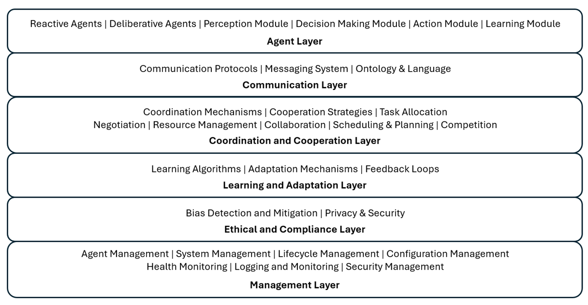

Multi-Agent System (MAS) Reference Architecture
The reference architecture of a multi-agent system (MAS) consists of several layers and components that enable the agents to interact, coordinate, and perform tasks autonomously. Here's a detailed outline of a typical MAS architecture.

Agent Layer
Agent Types
- Reactive Agents: Respond to environmental changes in real-time.
- Deliberative Agents: Plan actions based on a model of the world and their goals.
- Hybrid Agents: Combine reactive and deliberative approaches.
Learn more about the differences between reactive and deliberative agents and how they fit into modern agentic systems.
Agent Modules
- Perception Module: Gathers and processes sensory information from the environment.
- Decision-Making Module: Determines the agent's actions based on its goals and the current state.
- Action Module: Executes the chosen actions in the environment.
- Learning Module: Adapts the agent's behavior based on experiences and feedback.
Explore how learning mechanisms enhance agent capabilities over time.
Communication Layer
- Communication Protocols: Define the rules for information exchange between agents (e.g., TCP/IP, HTTP, custom protocols).
- Messaging System: Facilitates asynchronous message passing and ensures reliable delivery of messages.
- Ontology and Language: Common vocabulary and syntax for agents to understand each other (e.g., FIPA-ACL, KQML).
The Model Context Protocol (MCP) provides a modern foundation for agent communication and context sharing.
Coordination and Cooperation Layer
Coordination Mechanisms
- Task Allocation: Distributes tasks among agents based on their capabilities and current workload (e.g., Contract Net Protocol).
- Resource Management: Manages shared resources to prevent conflicts and ensure efficient utilization.
- Scheduling and Planning: Coordinates the timing of actions and plans to achieve collective goals.
Cooperation Strategies
- Negotiation: Agents negotiate to reach mutually beneficial agreements.
- Collaboration: Agents work together towards common objectives.
- Competition: Agents compete for resources or tasks in a controlled manner.
Different coordination patterns like the master-slave pattern help organize agent interactions in complex systems.
Learning and Adaptation Layer
- Learning Algorithms: Machine learning techniques to enable agents to learn from their interactions and experiences.
- Adaptation Mechanisms: Methods for agents to adjust their behavior based on new information and changing environments.
- Feedback Loops: Mechanisms to provide feedback from the environment and other agents to support learning and adaptation.
Discover how teachable agents learn from human feedback and improve over time.
Ethical and Compliance Layer
Bias Detection and Mitigation
- Fairness Algorithms: Ensures decisions and actions are fair and unbiased.
- Regular Audits: Conducts regular audits to detect and mitigate biases.
Privacy and Security
- Data Protection Mechanisms: Ensures user data privacy and compliance with regulations (e.g., GDPR, CCPA).
- Secure Communication: Secures data transmission and storage.
Management Layer
Agent Management
- Lifecycle Management: Handles the creation, execution, monitoring, and termination of agents.
- Health Monitoring: Tracks the status and performance of agents.
System Management
- Configuration Management: Manages system settings and parameters.
- Logging and Monitoring: Records system activities and performance metrics.
- Security Management: Ensures secure communication, data integrity, and authentication.